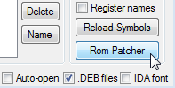
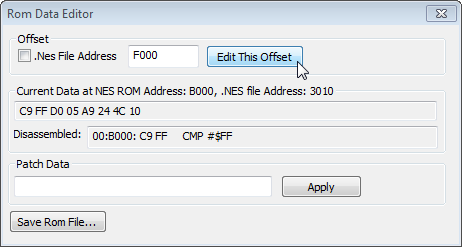
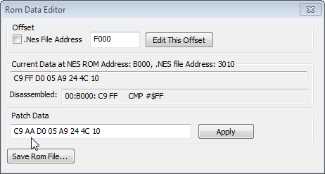

Содержание
Этот способ редактирования кода и данных является запасным, и в лучшем случае подходит для редактирования лишь одного-двух байтов. Гораздо удобнее пользоваться Hex Editor'ом и Inline Assembler'ом.
Окно ROM Data Editor открывается в Debugger'е кнопкой ROM Patcher. Предварительно желательно скопировать в буфер обмена адрес, по которому нужно отредактировать байты.

В окне ROM Data Editor вводишь адрес NES Memory в поле ввода вверху и жмешь кнопку Edit This Offset

Если это адрес из ROM File, предварительно нужно поставить галочку .Nes File Address.
В поле Current Data отображены 8 байтов, которые находятся начиная с введенного адреса. Если требуется изменить лишь какой-то из этих байтов, можно скопировать всю строчку целиком, вставить в нижнее поле ввода, а затем подменить необходимый байт, например заменив #$FF на #$AA.

Всю строчку копировать не обязательно, достаточно было скопировать байты #$C9 и #$FF. Байты не обязательно записывать заглавными буквами.
В поле ввода помещается не более 30 символов, то есть максимум можно записать 15 байтов без пробелов.
В поле Current Data указан адрес $B000, а не $F000, потому что маппер NROM дублирует адреса $8000-$BFFF и $C000-$FFFF.
Чтобы применить свои изменения, нажми кнопку Apply. Если все получилось, то в поле Current Data ты увидишь свои изменения. А чтобы сохранить изменения в файле без необходимости сохранять их через Hex Editor, нажми кнопку Save Rom File.
После использования ROM Data Editor изменения в ROM File не выделяются красным цветом, и эти изменения нельзя отменить через Ctrl + Z.